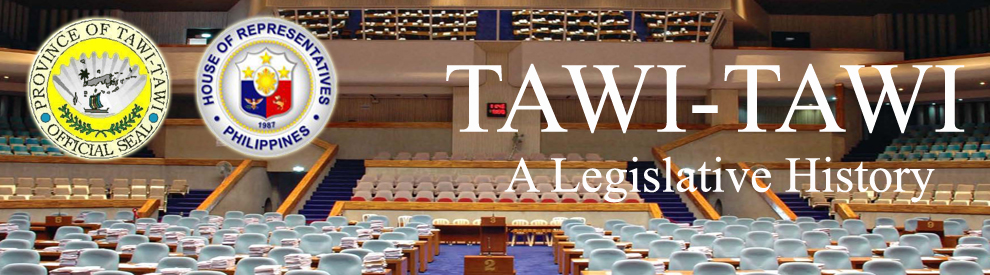

| History |
| Legislators |
| Laws |
| About |
 |
TAWI-TAWI
The following text/information are lifted from the book of Lee W. Vance entitled Tracing your Philippine Ancestors which was published in Provo, Utah by Stevenson’s Genealogical Center in 1980 and Symbols of the State by the Department of Interior and Local Government of the Republic of the Philippines in 1998.
The province of Tawi-Tawi is the southernmost of all the Philippine provinces. It comprises a large number of widely scattered islands of the Sulu Archipelago, located between Sulu province and the Malay island of Borneo.
It is made up of the Cagayan de Sulu Islands, the Turtle Islands, and the Tawi-Tawi Islands, and it is surrounded by Sulu Sea on the north and west, and the Celebes Sea on the east and south.
Following is a time line1,2 of events that led to the creation and development of the province of Tawi-Tawi:
DATE |
E V E N T |
|
Sultan Muizz ud-Din entered into an agreement with Alexander Dalrymple of the British East India Company for commercial and economic concessions to the British. |
|
Muizz ud-Din renewed treaty with the British. |
|
Sultan Azim ud-Din renewed the treaty with the British. |
|
Datu Teteng annihilated the British troops in Balambagan. |
|
The British forces withdrew from Tawi-Tawi after the Spanish ship San Jose was captured by the brother of Sultan Aliyud-Din I. |
|
The representative of the British North Boneo Company, Baron von Overbeck, signed a treaty with Sultan Jamalul Alam for the lease of the Sultan’s land in Borneo for $5,000 Mexican dollars annually. |
|
Spain, Britain and Germany signed a protocol in Madrid. It provided that Spain relinquished all her claims to the offshore lands in Borneo, granted freedom to trade and navigation in Sulu. In turn Britain and Germany recognized the Spanish sovereignty over Balabac and Cagayan de Sulu. |
|
The Tagalog soldiers garrisoned at Busbus, Jolo mutinied against the Spanish. |
|
The American forces occupied Jolo, Sulu and established garrisons at Bonggao and Siasi. |
|
The United States entered into a treaty with Spain whereby Sibutu and Cagayan de Sulu were ceded to the Americans for $100,000. |
|
The British Company sold its rights to Sabah to the British Crown. |
|
The offshore islands of Borneo such asTaganak, Bakkungan, Bayaua, Sibauang and Lihiman Islands were turned over to the Philippines by the British North Borneo government. |
|
Tawi-Tawi province was separated from Sulu and made an independent province of the Philippines by virtue of Presidential Decree 302. Its towns then included South Ubian, Tandubas, Simunul, Sitangkai, Balimbing, Bungao, Cagayan de Sulu and Turtle Island. |
|
Tawi-Tawi is currently made up of Bongao, Languyan, Mapun (Cagayan de Tawi-Tawi), Panglima Sugala, Sapa-Sapa, Simunul, Sitangkai, South Ubian, Tandubas, and Turtle Islands. |
Sources:
1Vance, L. W. (1980). Tracing your Philippine ancestors. Provo, Utah: Stevenson's Genealogical Center.
2Velasco, C. R. and Untivero, R. G. (1998). Symbols of the State. Manila: National Media Production Center.

Congressional Library Bureau
Legislative Library Service